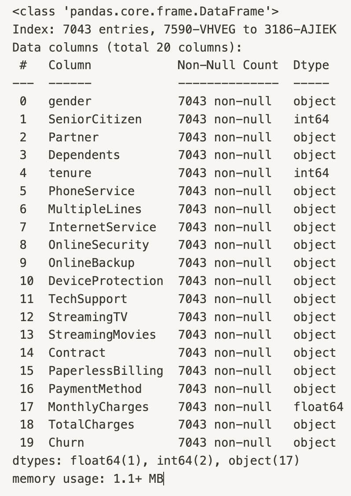

Feedforward neural network to Predict Churn
In this project I wanted to predict the churn of telecommunication customers based on different indicators. The data set is available on Kaggle, you can get there by clicking here
The libraries used for this project are Pandas, Tensorflow and Scikit-learn. I started out be importing and exploring the data set. The data set contains 7043 entries. Most of the columns data type is object and there where also a few missing values.
After cleaning the missing values I continued with encoding the data frame to prepare it for use with the neural network. I first checked for all unique values in all columns.
To prepare the dataset for a neural network, I encoded the categorical data. I employed a manual approach to create more control over the process:
- I initialized an
encoding_dictionaryto store mappings for each categorical column. - For each column, I extracted the unique values, assigned each a unique integer, and stored these mappings in the dictionary.
- I then applied this dictionary to the DataFrame, transforming all categorical entries into integers, making the data suitable for modeling.
For the prediction model, I chose a feedforward neural network due to its simplicity and efficiency. This type of network is well-suited for tabular data like this data frame. I used TensorFlow and Scikit-learn for building and training the model, which involved setting up layers, choosing an optimizer, and defining the loss function. Here I used standard values and tried different values to determine the effect this has on the model. The model was trained with normalized features to ensure that all features contributed equally to learning. This was done with the Scikit-learn's StandardScaler.
This project not only enhanced my skills in handling and preprocessing data for neural networks but also provided practical experience in churn prediction, which is pivotal in customer retention strategies for businesses.